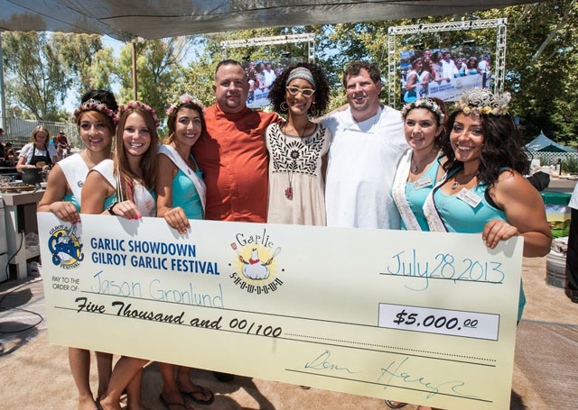

Cook-off Stage

Friday, July 25, 2014
Master of Ceremonies: Janie Mardesich and Judy Lazarus
- 11:00 - Local Celebrity Chef - Dewey Lucero – Lucero Olive Oil, Corning, CA
- 11:30 - Visiting Sister City Chef - Akemi Inamura – Takko Machi, Japan
- 12:00 - Gourmet Alley Pyro Chefs - Jon & Pat Vickroy
- 1:00 - Garlic Discussion Q & A - Brian Jones - Garlic Production Manager, OLAM Spices & Vegetables
Garlic Bowl Master of Ceremonies: Joe Starkey & Jason Gronlund
- 2:00 - Garlic Bown Competition - Exec. Chefs from U.C. Berkeley, San Jose State, Fresno State & Santa Clara University compete for a $5,000 scholarship for their school
Judges:
- Rhett Hall - Former S.F. 49er & U.C. Berkeley graduate
- Jay Marshall - Exec. Chef, Sysco S.F.
- Beat Giger - Corp. Chef & Dir. of Special Events, Pebble Beach
- Danae McLaughlin- Dir. of Special Events, The Harker School
- David Isenberg, Chef - Instructor, Le Cordon Bleu
- 4:00 - Garlic Bowl - Winner Announced
Saturday, July 26, 2014 - Cook-off Contest
Cook-off Contest Master of Ceremonies: Dan Green, Kate Callaghan & Wendy Brodie
- 10:00 - Great Garlic Cook-off Contest
Judges
- Jason Gronlund
Vice President of Culinary, Smokey Bones Bar & Fire Grill
Evelyn Miliate
Raley's, Bel Air, Nob Hills Foods
Jason Lavinsky
Exec. Chef, Hyatt at Fisherman’s Wharf
Majid Bahriny
Mama Mia's Restaurant
Adam Sanchez
The Milias Restaurant
Contestants
- Chera Little
Garlic Pepper Bacon Jam Pork Tenderloin Sliders with Fried “Piggles”
Jennifer Beckman
Crispy Pork Plantacos with Garlicky Black Bean Sauce
Margee Barry
Cabana Crab Sizzlin Summer Shooters
Renata Stanko
Summer Salmon Rolls with Garlic Lemon Sauce
Sonya Goergen
Blackened Garlic Chicken Enchiladas with Avocados Artichokes and Tropical Quinoa
Stacey Clayton
Garlic Summer Salad
Suzanne Clark
Sarsaparilla Glazed Wild West Burgers and Southwest Sweet Potatoes
Terri Crandall
Pomegranate Sweet Chili Glazed Pork Kebobs with Sweet Potato Hash
- 12:15 - Cook-off Contest - Winners Announced
Afternoon Master of Ceremonies: Ed Sauceda
- 12:30 - Cooking w/ CA Olive Oil & Garlic
Dewey and Bobby Lucero – Lucero Olive Oil, Corning, CA
- 1:30 - Celebrity Chef Evelyn Miliate
Raley's, Bel Air, Nob Hill Foods
- 2:30 - Celebrity Chef Jason Gronlund
Smokey Bones Bar & Fire Grill
- 3:30 - Celebrity Chef Jason Lavinsky
Exec. Chef, Hyatt at Fisherman's Wharf
- 4:30 - Garlic Discussion Q & A
Brian Jones - Garlic Production Manager, OLAM Spices & Vegetables
Sunday, July 27, 2014
Master of Ceremonies: Sam and Greg Bozzo
- 10:00 - Local Celebrity Chefs
John Melone & Gloria Melone
- 11:00 - Olive Oil / Food Pairing
Dewey Lucero, Lucero Olive Oil, Corning, CA
Showdown Master of Ceremonies: Carla Hall
- 12:00 - Garlic Showdown Professional Chefs compete for $5,000
- 2:15 - Garlic Showdown Winner Announced
Afternoon Master of Ceremonies: Greg Bozzo
- 2:30 - Celebrity Chef
Carla Hall - ABC Television "The Chew"
- 3:30 - Local Celebrity Chefs
SakaBozzo Show - Gene Sakahara & Sam Bozzo